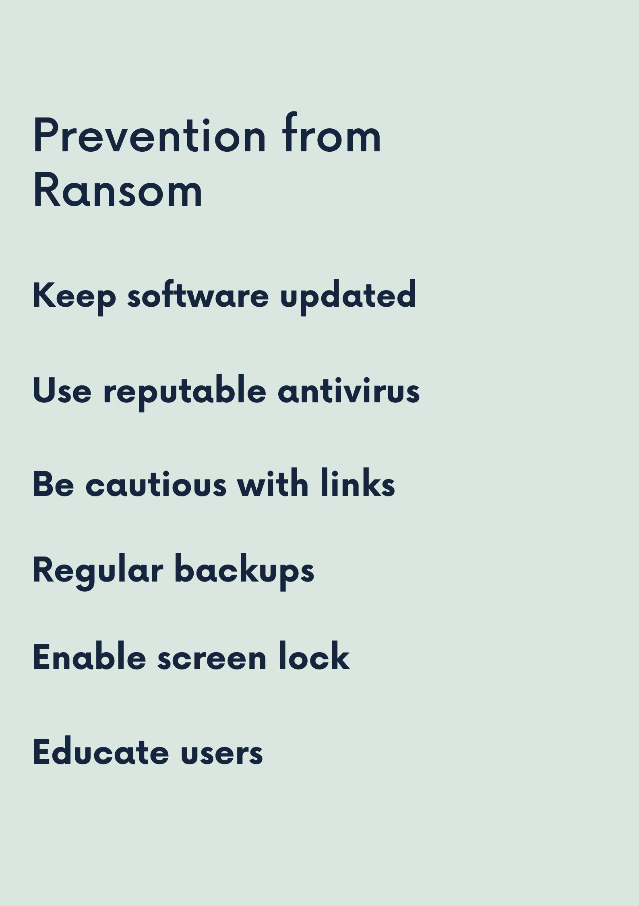

Prevention and Mitigation
Ransomware attacks can be devastating, but there are steps you can take to protect yourself and mitigate the impact. Here are some prevention and mitigation measures:
- Integrate code with security tools and machine learning for ransomware reduction: Utilize advanced security tools and machine learning algorithms to detect and prevent ransomware attacks in real-time.
- Daily data backups for contingency in case of incidents: Regularly back up your important data to secure locations, such as cloud storage or external drives, to ensure you can recover your files in case of a ransomware attack.
- Download apps only from official stores like Play Store: Avoid downloading apps from third-party sources, as they may contain malicious code. Stick to reputable app stores like Google Play Store for downloading apps.
- Stay informed about the latest security measures: Keep yourself updated about the latest developments in cybersecurity and ransomware prevention techniques. Subscribe to security blogs, forums, and newsletters to stay informed about emerging threats.
- Prioritize online safety through education and awareness: Educate yourself and your organization about ransomware threats and best practices for prevention. Conduct regular cybersecurity awareness training sessions to ensure everyone knows how to recognize and respond to ransomware attacks effectively.
